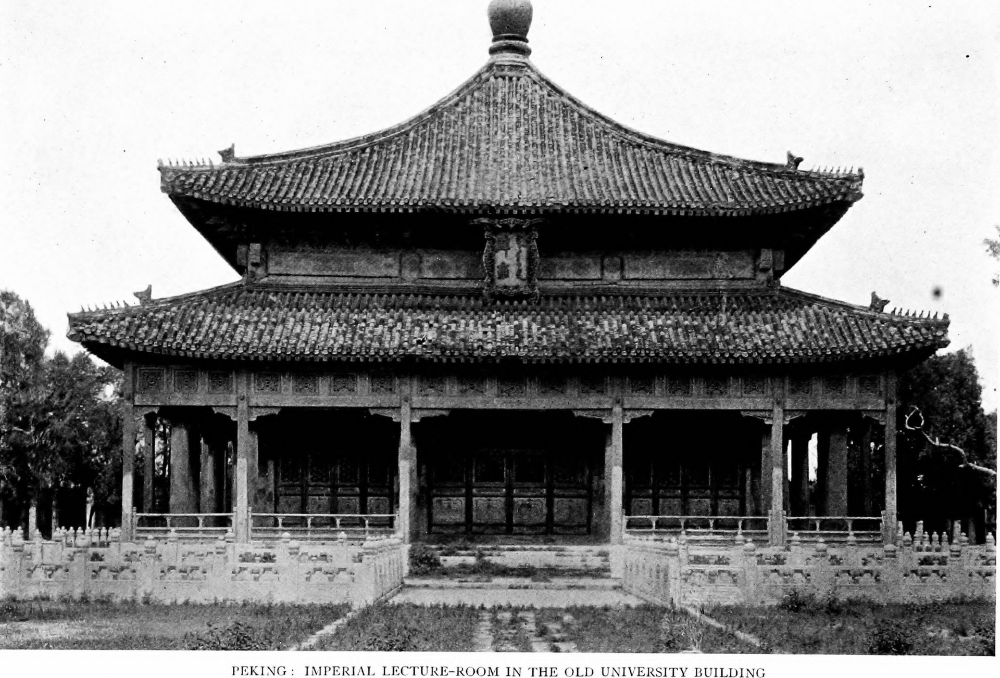
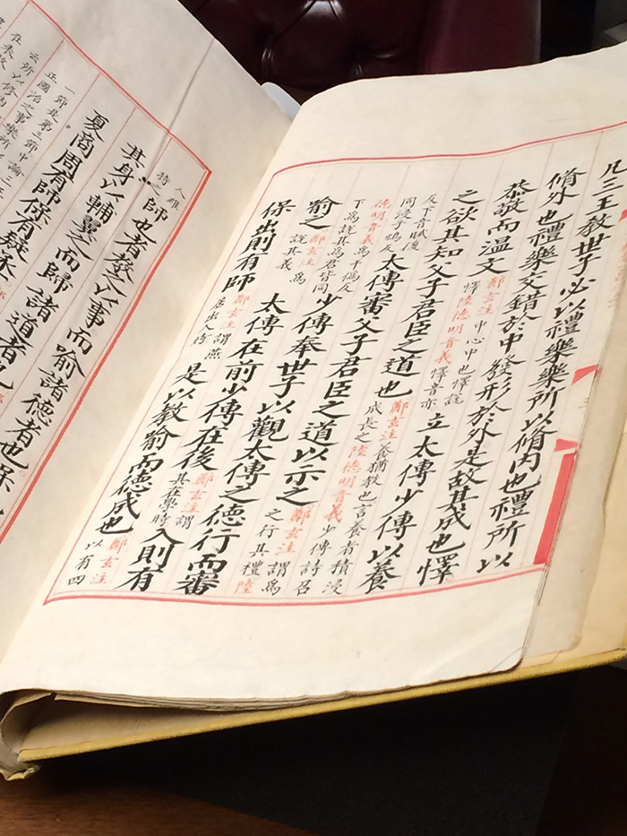

The Yongle Encyclopedia was a wonderous collection of scholarly works from Ancient China compiled by thousands of scholars and spanning virtually every
subject in existence at the time.
Press the button below to begin learning about the amazing history behind the extremely large encyclopedia!
What was it?
The Yongle Encyclopedia was a collection of 22,937 chapters combined into 11,095 volumes of writing by thousands of Chinese scholars
commanded by Zhu Di, the third emperor of the Ming dynasty from 1402-1424. Its immense length gave it the title of the longest encyclopedia
in the world. Zhu Di is known to have loved reading, so it makes sense that he wanted to compile so much literature together. The encyclopedia
was completed at the Imperial Academy in Nanjing, where Nanjing University stands today.

Imperial Academy in Nanjing
Contents
Zhu Di aimed for the encyclopedia to contain all of Chinese knowledge, so it featured a variety of subjects included astronomy, history,
philosophy, art, literature, religion, and many others. The organization of the encyclopedia is also very interesting because, unlike English,
Chinese languages do not have any alphabetical order, so instead the encyclopedia was ordered using rhyming syllables. With 370 million Chinese
characters equivalent to nearly 250 million English words, the encyclopedia is even larger than the Encyclopedia Brittanica.
Significance
The Yongle Encyclopedia is very valuable as a collection of works from the beginning of Chinese history until the Ming dynasty. Although many
volumes are missing, we have still been able to analyze thousands of years of literature and study Chinese culture and history through the
large collection. Many plays and dramas have even been performed on stage in modern times, and many unseen poems and tales have been published.
The Number One Scholar Zhang Xie performed by the Zhejiang Yongjia Kunqu Opera Troupe
Legacy
The original copy of the encyclopedia was lost, but the reason for its disppearance is still a mystery. One theory historians have is that
the encyclopedia was destroyed in the 1449 fire in Nanjing, a disastrous fire that burned down three entire halls and many other parts of
the palace. Other historians believe that it may have been burned or destroyed during the late Ming dynasty or early Qing dynasty. Some
even believe that it is actually hidden inside the palace walls of the Qing dynasty. In addition, many colonists including British soldiers
took sections of the encyclopedia for themselves when invading Beijing.
Now, only a copy remains, ordered by Emperor Jiajing after the 1449 Nanjing fire. However, of the copied edition, only 400 volumes have
been found. Interestingly, the volumes that have been recovered were not only discovered in China but also worldwide in places like Huntington
Library in California, US.

A portion of the encyclopedia found in the Huntington Library